목공예기능사 (2004-02-01 기출문제)
1과목: 공예디자인
1. 다음 색의 혼합방법 중 혼합결과의 명도가 두 색의 중간이 되는 혼합은?
- 가산 혼합
- 회전 혼합
- 감산 혼합
- 색광 혼합
(정답률: 69%)

2. 다음 중 수축과 후퇴감을 주는 색은?
- 빨강
- 노랑
- 주홍
- 파랑
(정답률: 67%)
3. 도면의 세로와 가로의 비는?
- 1 : √2
- 1 : √3
- 1 : √5
- 1 : √8
(정답률: 89%)
4. 다음 중 디자인 조건이 가장 올바르게 짝지워진 것은?
- 합목적성, 경제성, 독창성, 심미성
- 합목적성, 질서성, 주관성, 독창성
- 합목적성, 모방성, 심미성, 객관성
- 합목적성, 심미성, 질서성, 주관성
(정답률: 87%)
5. 텍스쳐(texture)의 의미 중 맞는 것은?
- 재질감
- 균형감
- 평등감
- 입체감
(정답률: 90%)
6. 다음 중 유기적(Organic)형태는?
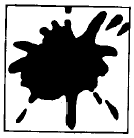
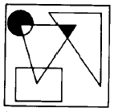
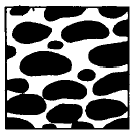
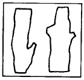
(정답률: 85%)
7. 다음 그림은 어떤 착시현상인가?
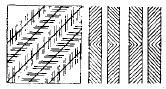
- 크기
- 배경
- 방향
- 거리
(정답률: 95%)
8. 우리가 보고 있는 물체의 실제 특징과 지각판단된 물체와의 사이에 존재하는 모순된 시각경험을 뜻하는 것은?
- 스파늉
- 착시
- 질감
- 대칭
(정답률: 90%)
9. 힘차고 굵고 두꺼우며 강인한 예술적 조형 심리와 형태를 가장 잘 나타낸 시대는?
- 통일신라
- 백제
- 고구려
- 고신라
(정답률: 79%)
10. 독일 공작연맹이 결성되어 주장한 것은?
- 미술의 특성화
- 조형의 규격화
- 수공예의 장식화
- 양식의 분리화
(정답률: 78%)
11. 색상 거리가 가장 가까운 것끼리 짝지은 것은?
- 파랑 ↔ 노랑
- 빨강 ↔ 연두
- 남색 ↔ 주황
- 자주 ↔ 보라
(정답률: 89%)
12. 고속버스에 주황색을 칠했다면 무엇 때문일까?
- 매우 빠른 속도감을 나타내려고
- 주목성이 강해 경계심을 일으키게 하려고
- 색채가 뛰어나서 피로감을 덜게 하려고
- 주황색은 2차색 이므로 고상해 보이도록 하려고
(정답률: 86%)
13. 국제표준 규격을 나타낸 것은?
- ISO
- BS
- KS
- ASA
(정답률: 88%)
14. 도면에서 문자크기의 기준이 되는 것은?
- 문자의 높이
- 문자의 굵기
- 문자의 너비
- 문자의 대각선
(정답률: 74%)
15. 절단면의 실제모양을 나타내는 도형은?
- 절단선
- 보조투상면
- 단면도
- 정투상도
(정답률: 79%)
16. 다음 그림과 같은 원리의 투상도법은?
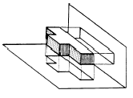
- 축측투상
- 사투상
- 정투상
- 단면투상
(정답률: 69%)
17. 순색에 어떠한 색을 섞으면 명청색(明淸色)이 되는가?
- 보색
- 회색
- 검정
- 흰색
(정답률: 64%)
18. 먼셀(Munsell)의 기본 5색상은?
- 빨강, 파랑, 노랑, 분홍, 초록
- 파랑, 주황, 초록, 노랑, 보라
- 빨강, 노랑, 초록, 파랑, 보라
- 빨강, 파랑, 노랑, 초록, 연두
(정답률: 84%)
19. 다음 중 가장 가볍고 부드러운 느낌을 주는 색은?
- 고명도 색의 저채도
- 중명도 색의 중채도
- 저명도 색의 고채도
- 중명도 색의 고채도
(정답률: 71%)
20. 녹색바탕에 크고,작은 빨강색의 꽃무늬에 나타나는 배색의 느낌은?
- 침착하다
- 우울하다
- 조용하다
- 화려하다
(정답률: 92%)
2과목: 목공예재료
21. 정원에 내접(內接)하는 정7각형 그리기에서,
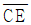
의 길이는?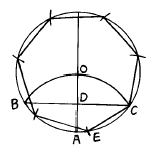
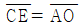
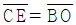
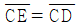
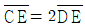
(정답률: 86%)
22. 투시도의 기호 중 시중심은?
- E
- F
- CV
- PP
(정답률: 90%)
23. 다음 목재의 결점에 관한 설명 중 잘못된 것은?
- 흡습성이 크다.
- 재질이 고르지 못하다.
- 타거나 썩기 쉽다.
- 가공이 어렵다.
(정답률: 69%)
24. 목재의 변재에 대한 설명이 잘못된 것은?
- 수액이 유통되는 곳
- 가소성이 풍부하다.
- 색깔이 진하다.
- 양분을 저장하는 곳
(정답률: 91%)
25. 합판의 특성을 설명한 것 중 옳은 것은?
- 목재강도의 방향차를 균등화 한다.
- 거칠음이 많다.
- 중량이 비교적 무겁고 넓은 폭을 얻기 어렵다.
- 쪼개지거나 갈라짐이 쉽다.
(정답률: 85%)
26. 목공예품 도장재료로 적합치 않은 도료는?
- 캐슈
- 메탈래커
- 샌딩 시일러
- 셸락니스
(정답률: 59%)
27. 다음 접착제의 원료 중 천연 고분자가 아닌 것은?
- 황화규소
- 젤라틴
- 카세인
- 활석
(정답률: 84%)
28. 목재에서 수액이 가장 적으며 건조가 빠르고 목질도 견고해 벌목하기 좋은 시기는?
- 봄, 여름
- 여름, 가을
- 가을, 겨울
- 겨울, 봄
(정답률: 95%)
29. 목재의 기계적 성질 중 목재를 잡아끄는 외력에 대한 저항을 나타내는 강도시험은?
- 인장강도
- 휨강도
- 전단강도
- 경도
(정답률: 95%)
30. 단판에 대한 설명 중 올바른 것은?
- 베니어(veneer)라고도 하며 두께 약 5mm 이하의 얇은 판을 말한다.
- 플라이 우드(plywood)라고도 하며 두께 5mm 이상되는 판을 말한다.
- 베니어와 플라이우드의 통칭이며 판 두께는 여러가지가 있다.
- 얇게 재단한 원목판을 홀수로 교차하게 직교시켜 서로 접착한 판을 말한다.
(정답률: 84%)
31. 다음 중 가장 고운 사포에 해당하는 것은?
- 80#
- 200#
- 400#
- 600#
(정답률: 79%)
32. 다음 접착제 중 아교나 카세인의 대용품으로 목공예품에 널리 사용하는 접착제는?
- 에폭시수지접착제
- 고무접착제
- 초산비닐수지접착제
- 초산섬유소계접착제
(정답률: 74%)
33. 목재의 갈라짐에서 윤상할이란?
- 심재부가 방사선 방향으로 갈라지는 것
- 껍질쪽에서 수심쪽으로 갈라지는 것
- 변재와 심재의 경계선이나 나이테 방향으로 갈라지는 것
- 목재의 중간에서 섬유방향이 끊어지는 것
(정답률: 80%)
34. 목재의 수축과 팽창을 적게 하는 방법이 아닌 것은?
- 가급적 가벼운 목재를 사용한다.
- 가능한 한 정목판을 쓴다.
- 적당한 습도의 장소에 둔다.
- 함수량을 다르게 하여 건조한다.
(정답률: 78%)
35. 다음 중 목재의 비중 공식은?
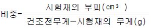
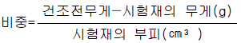
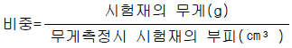
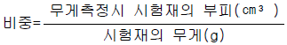
(정답률: 60%)
36. 다음 중 하도 도료의 역할이 아닌 것은?
- 목섬유를 안정화 시킨다.
- 나뭇털을 고정시켜 연마를 생략하게 한다.
- 상도 도료의 침투를 감소시킨다.
- 소지 목재의 균열을 감소시킨다.
(정답률: 74%)
37. 목재의 자연 건조법 중 틀린 것은?
- 목재 상호간의 간격을 유지하고 지면에서 높이 30㎝정도 되는 고임목을 받친 다음 쌓는다.
- 뒤틀림 등 변형을 막기 위해 건조 종료 시까지 처음 쌓아둔 상태로 둔다.
- 마구리 부분의 급속 건조를 피하기 위해 일광을 막거나 페인트로 칠한다.
- 뒤틀림을 막기 위하여 오림대를 고루 괴어 둔다.
(정답률: 80%)
38. 목재가 수축이 시작되는 시기는?
- 함수율 0%
- 함수율 15% 이하
- 함수율 30% 이하
- 함수율 50% 이하
(정답률: 67%)
39. 대나무에 관한 설명 중 틀린 것은?
- 줄기가 곧고 탄력성과 강도가 크다.
- 습기에 약하고 썩기 쉬운 결점이 있다.
- 나이테가 없으며 비중은 기건재가 1.10∼2.20이고 생나무는 0.30∼0.40이다.
- 인장강도가 1,500∼2,500㎏/㎝2 이며 휨강도는 2,000㎏/㎝2 정도 된다.
(정답률: 79%)
40. 다음 중 목재의 건조전 처리가 아닌 것은?
- 수침법(水浸法)
- 자비법(煮沸法)
- 진공법(眞空法)
- 증기법(蒸氣法)
(정답률: 57%)
3과목: 목공예
41. 입체적인 형을 대략 깎는데 사용하고 또한 곡면을 깎아 다듬을 때 가장 적합한 끌은?
- 둥근끌
- 평끌
- 홈끌
- 세모끌
(정답률: 78%)
42. 3mm 두께의 합판을 3cm 간격으로 일정하게 자르려고 한다. 어느 방법을 택하는 것이 가장 효과적인가?
- 잘 연마된 평칼로 자른다.
- 쪼개기 그무개로 자른다.
- 양날톱으로 자른다.
- 등대기톱으로 자른다.
(정답률: 81%)
43. 목제품의 유성니스 투명 도장시 바닥칠을 하는 목적에 대한 설명 중 거리가 먼 것은?
- 착색을 고착시키며 흡수를 방지한다.
- 눈메움 작업을 쉽게 할 수 있다.
- 다음 칠하는 도막의 부착력을 좋게 한다.
- 상칠을 할 때 건조를 촉진 시킨다.
(정답률: 48%)
44. 목재 마름질 할 때의 유의 사항 중 잘못된 것은?
- 긴 일감을 짧은 자로 재면 오차가 많이 생긴다.
- 눈금을 읽을 때는 눈금의 수평선 위 또는 수직선 위에서 본다.
- 나비가 좁은 일감과 짧은 일감은 치수대로 처음부터 세분화하여 마름질 한다.
- 폐목이 적게 나오도록 마름질하고 남은 재료는 작은 일감에 이용 한다.
(정답률: 85%)
45. 톱니의 날어김은 톱몸 두께의 몇 배로 하는 것이 가장 알맞은가?
- 0.5배
- 1.3∼1.8배
- 2∼2.5배
- 3∼4배
(정답률: 67%)
46. 톱질이 잘 되지 않을 때 제일 먼저 점검해야 할 일은?
- 톱니 고르기
- 날 어김
- 날 세우기
- 톱몸 바로잡기
(정답률: 69%)
47. 대팻날의 앞날 표준 날각은?
- 25∼30°
- 35∼40°
- 45∼50°
- 55∼60°
(정답률: 48%)
48. 손밀이 대패기계에 대한 설명 중 잘못된 것은?
- 대팻날과 정반의 틈은 5mm 이상이 적당하다.
- 정반의 앞쪽은 날끝선에서 1.5∼3mm 정도 낮게 한다.
- 대팻날과 접촉을 예방하는 장치가 구비되어야 한다.
- 대패축의 고정 장치가 있어야 한다.
(정답률: 85%)
49. 사포의 사용 방법이 맞는 것은?
- 번수가 낮은 것부터 높은 것으로 마무리 작업을 한다.
- 높은 것부터 낮은 것으로 마무리 작업을 한다.
- 가리지 않고 아무거나 한다.
- 높은 것에서 낮은 것을 번갈아 가며 한다.
(정답률: 71%)
50. 다음 중 감전 재해가 가장 많이 일어나는 시기는?
- 1∼2월
- 3∼4월
- 5∼6월
- 7∼8월
(정답률: 92%)
51. 다음 중 안전에 위배되는 사항은?
- 작업복은 항상 단정하게 입는다.
- 작업복은 주머니가 적어야 좋다.
- 조각도를 잡는 손은 장갑을 낀다.
- 기계 사용시는 소매를 걷는다.
(정답률: 88%)
52. 재해 방지 대책의 일반 원칙 사항에 관한 기술 중 적당하지 못한 것은?
- 재해 조사가 일단 끝나면 밝혀진 사실들을 신중히 검토한다.
- 재해 발생의 상황 원인 대책을 적당한 방법으로 종업원에게 알리고 안전 교육을 실시하도록 한다.
- 재해 방지 대책은 상사의 지시에 의하여 가급적 빨리 실시하도록 한다.
- 위험한 작업 방법 및 물적 위험이 조사 결과 발견되었을 때에는 모든 종업원에게 연락 통보 하여 주의하여 경계시킨다.
(정답률: 91%)
53. 조선 시대의 목공예 분야 중 가구나 창호를 다루던 사람을 부르던 직능 명칭은?
- 소목장
- 대목장
- 도편수
- 두석장
(정답률: 92%)
54. 다음 중 장수와 단수의 연결 부위가 나사로 되어 있어 임의로 각도 확인 및 그리기가 가능한 목공용 측정 기구는?
- 자유자
- 접자
- 곱자
- 그무개
(정답률: 65%)
55. 기초적인 부조작업 순서로 알맞는 것은?
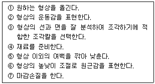
- ④-⑤-③-②-①-⑥-⑦
- ④-③-⑤-①-⑥-②-⑦
- ④-①-⑥-②-③-⑤-⑦
- ④-①-③-⑤-⑥-②-⑦
(정답률: 75%)
56. 합판 양면 붙이기 주의 사항과 거리가 먼 것은?
- 심판틀이 평면인가를 확인한다.
- 이음 부분에 필요한 심판을 정확한 위치에 놓도록 한다.
- 죔쇠 뒤에 빠져나온 접착제는 굳기 전에 씻어 낸다.
- 마구리대와 틈새가 일정하게 생기도록 간격을 둔다.
(정답률: 85%)
57. 다음 중 연귀 맞춤 방법을 주로 이용하지 않는 것은?
- 사진액자 제작
- 상자 제작
- 책상 다리 제작
- 사각함 제작
(정답률: 96%)
58. 조각도에 관한 설명 중 잘못된 것은?
- 조각도는 예리한 날 끝으로 되어 있으므로 손을 다치지 않도록 주의한다.
- 무딘 날은 자주 갈아 쓰고 날끝이 상하지 않도록 한다.
- 용도에 따라 조각도는 적합한 것을 골라 사용 한다.
- 둥근 조각도는 곡면 숫돌을 사용하면 날 세우는 시간이 오래 걸린다.
(정답률: 85%)
59. 다음 중 깊은 홈에 선문양을 조각할 때 쓰이는 것은?
- 평칼
- 창칼
- 삼각칼
- 곡삼각칼
(정답률: 39%)
60. 다음 평칼에 대한 설명 중 틀린 것은?
- 앞날의 경사각도에 따라 용도가 다르다.
- 굳은 나무를 조각할 때는 칼몸이 두꺼워야 한다.
- 칼날은 오른쪽용과 왼쪽용이 있다.
- 날끝의 폭에 따라 종류가 결정된다.
(정답률: 62%)